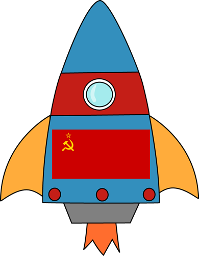
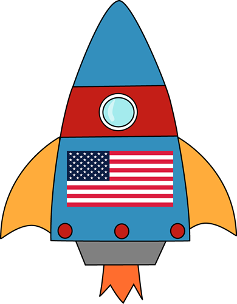

urss
urss
URSS
urssComienza en el 4/10/57 y se desarrolla por factores politicos,militares y el
orgullo nacional,y fue de esta forma como los proyectos espaciáles se
convirtieron en proyectos de primera prioridad.
|  |
urss |
© Por Luis Campero y Manuel Asuero